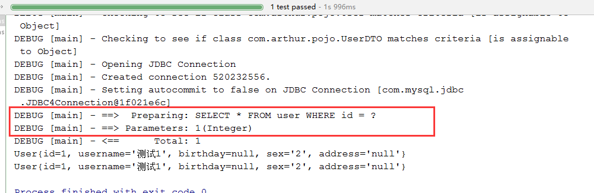
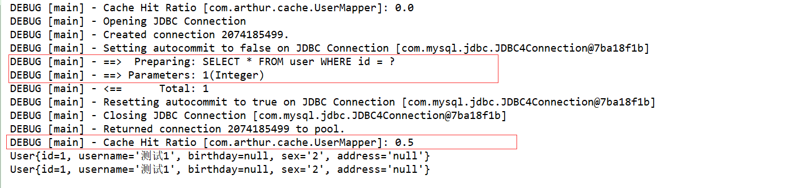

一级缓存
Mybatis中一级缓存是SqlSession级别的缓存。即同一个SqlSession执行2次相同查询（条件也相同），Mybatis只会在第一发送sql从数据库中查询数据，然后将数据缓存起来，第二次就会从SqlSession中返回数据。Mybatis默认开启了一级缓存。
1 |
|

上述代码中虽然对User对象执行了2次查询，但是Mybatis只发送了一次sql从数据库中进行查询。
二级缓存
二级缓存是Mapper（namespace）级别的缓存。多个SqlSession去操作同一个Mapper的sql语句，多个SqlSession可以共用二级缓存，二级缓存是跨SqlSession的。一个SqlSession在提交时会把数据刷入2级缓存中，另一个SqlSession执行相同语句时会从2级缓存中获取数据。
Mybatis默认是关闭二级缓存的，要使用需要在Mybatis的总配置文件中开启（全局），然后再在需要开启二级缓存的映射文件中使用<cache/>标签进行开启（单个映射文件）
1 | <settings> |
1 |
|

上述代码虽然属于不同SqlSession但是也只发送了一次sql到数据库进行查询。
Mybatis在执行查询时会先查询二级缓存，然后再查询一级缓存。
二级缓存：
1 |
|
一级缓存：
1 | ("unchecked") |